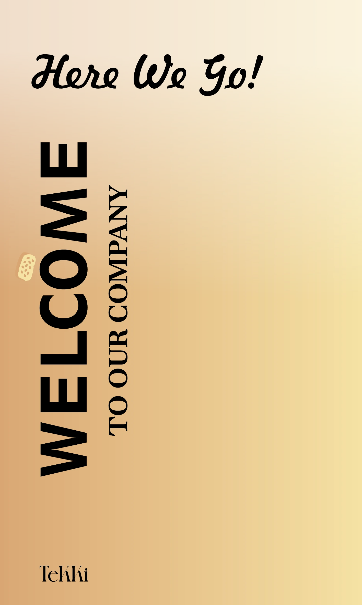
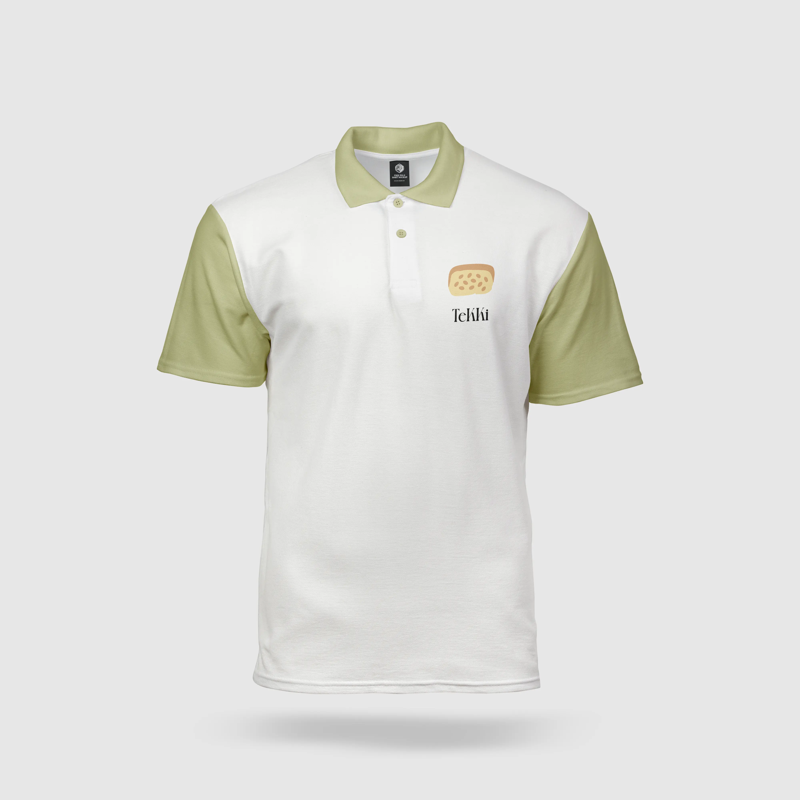
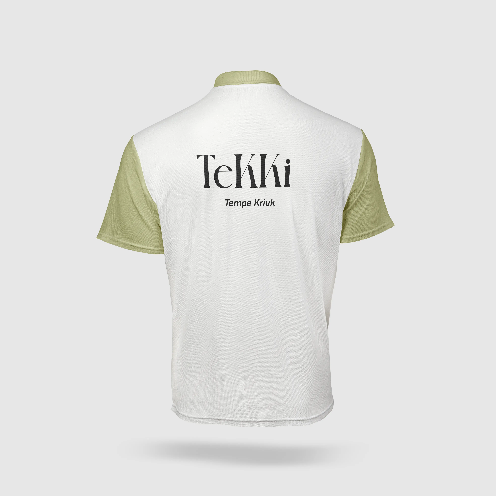
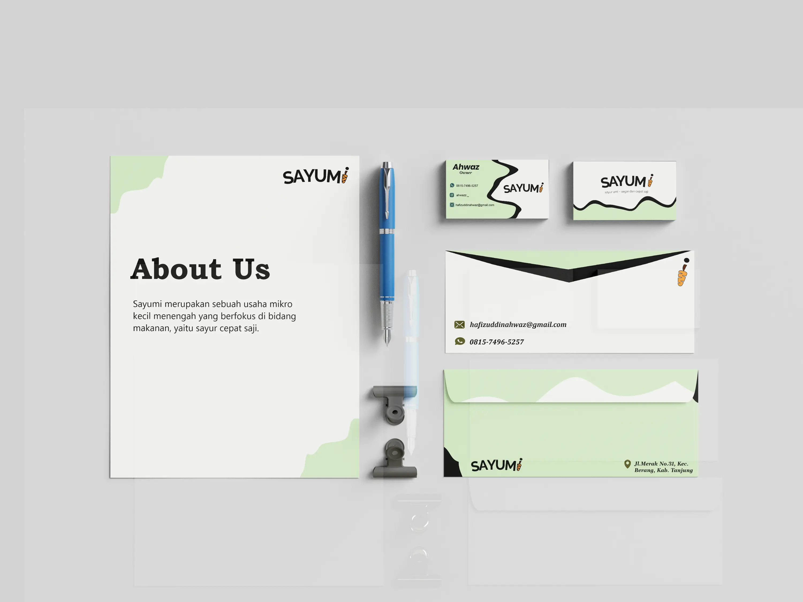

Graphic Design
Mockup Presentation
Visual Identity & Mockup Design
Koleksi desain grafis dan presentasi mockup produk yang saya kerjakan menggunakan Adobe Photoshop dan CorelDraw.







Konsep Desain
Pembuatan desain ini bertujuan untuk menonjolkan estetika minimalis namun tetap fungsional. Proses pengerjaan melibatkan memasukkan design pada mockup di Photoshop dan pembuatan layout vector di CorelDraw.
Detail Pengerjaan
- Color Grading & Image Enhancement.
- Layouting untuk kebutuhan cetak dan digital.
- Penyusunan Smart Object Mockup untuk presentasi.
Tool yang Digunakan
Photoshop & Corel